Córtex Estudos · 4º Semestre · Anato Pato II · Simpósio (4 grupos, mesmo dia)
Simpósio — Fígado e Estômago
Os quatro temas apresentados pelos grupos no simpósio de Anato Pato II: Hepatites A e B, Hepatite C e Cirrose, Gastrite crônica, úlceras pépticas e pólipos e Neoplasias gástricas (GIST e adenocarcinoma). Este hub foi montado a partir dos slides dos grupos (não há transcrição do simpósio) e amarra tudo com o que a Profa. Janaina já cobrou nas aulas de fígado e estômago — os temas foram escolhidos por ela exatamente por serem a continuação natural da matéria.
1 · Hepatite A: a lesão que o vírus não faz
- O HAV tem pouco efeito citopático direto: quem destrói o fígado é a resposta imune do hospedeiro — inata (células NK, Kupffer, interferons) e adaptativa (linfócitos T CD8+ reconhecem hepatócitos infectados, liberam IFN-γ/TNF-α e induzem apoptose e necrose).
- Resultado: hepatite aguda difusa com inflamação lobular e morte de hepatócitos → ↑ transaminases, icterícia, mal-estar. Não há reservatório persistente: a doença NÃO cronifica, e o anti-HAV IgG confere imunidade prolongada.
- Clínica depende da idade: crianças <6 anos ~70% assintomáticas; adultos fazem a doença sintomática — fases prodrômica → ictérica → convalescença. Autolimitada; sem antiviral específico (suporte).
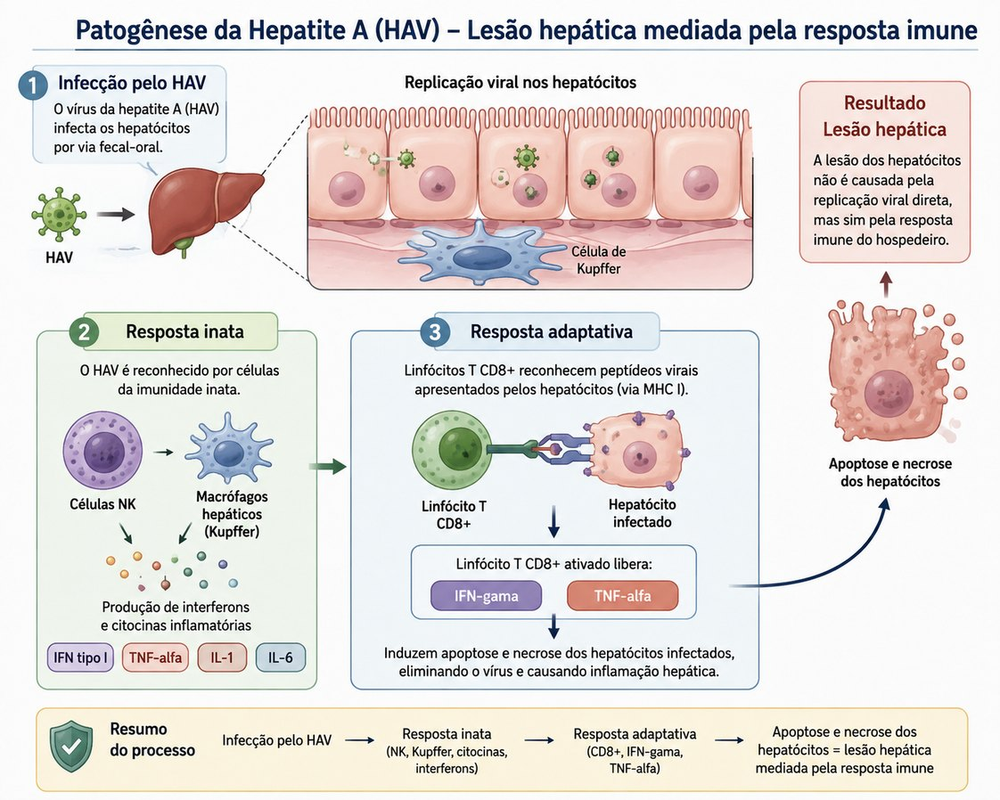
Na lâmina
- Infiltrado mononuclear portal e periportal RICO EM PLASMÓCITOS (marca da hepatite A), hepatócitos balonizados, corpúsculos de Councilman (apoptose) e colestase canalicular mais proeminente que nas outras hepatites virais; Kupffer hipertrofiadas e agregadas.
- Graves: necrose em ponte → panlobular/maciça com reação ductular. AUSENTES (e isso diferencia): fibrose septal/em ponte, hepatócitos em vidro fosco (isso é HBV) e agregados linfoides + esteatose (isso é HCV).
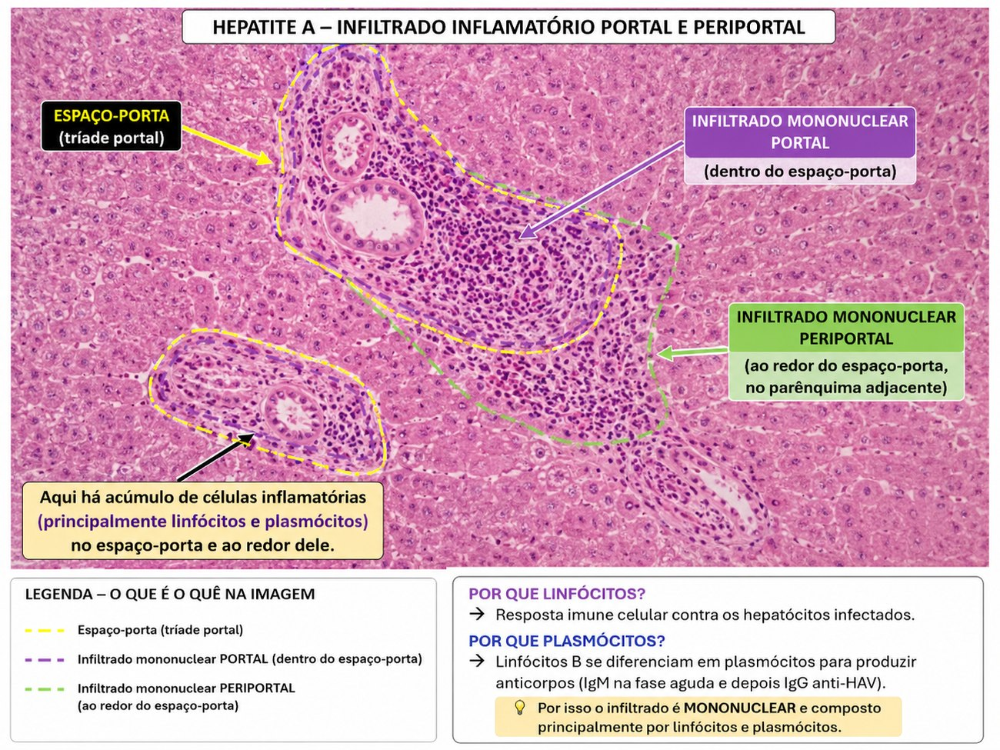
2 · Hepatite B: o vírus e a transmissão
- HBV (Hepadnaviridae): genoma de DNA circular parcialmente dupla-fita; envelope com HBsAg, capsídeo com HBcAg, e uma polimerase com atividade de transcriptase reversa (sintetiza DNA a partir de RNA).
- Três consequências que caem em prova: (1) o DNA viral INTEGRA-SE ao genoma do hepatócito → carcinogênese DIRETA, independente de cirrose; (2) a transcriptase reversa erra muito → alta taxa de mutação (incluindo a mutação pré-core); (3) o vírus em si tem efeito citopático limitado — de novo, quem lesa é a resposta imune.
- cccDNA: forma estável do DNA viral que fica no núcleo do hepatócito — o reservatório que explica persistência e reativação mesmo com carga viral suprimida.
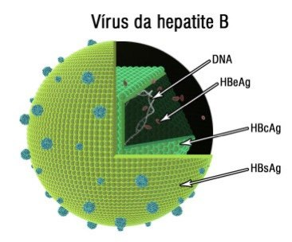
🎯 A idade da infecção determina o desfecho
Transmissão percutânea/mucosa (sangue, sêmen, fluidos). O número mais importante do deck: transmissão VERTICAL cronifica em 70–90% dos casos (imunidade imatura do recém-nascido tolera o vírus), enquanto a infecção do ADULTO cronifica em só 5–20%. Por isso a vacinação ao nascer e a profilaxia da transmissão vertical são a grande arma de saúde pública contra o HBV — e contra o carcinoma hepatocelular que vem décadas depois.
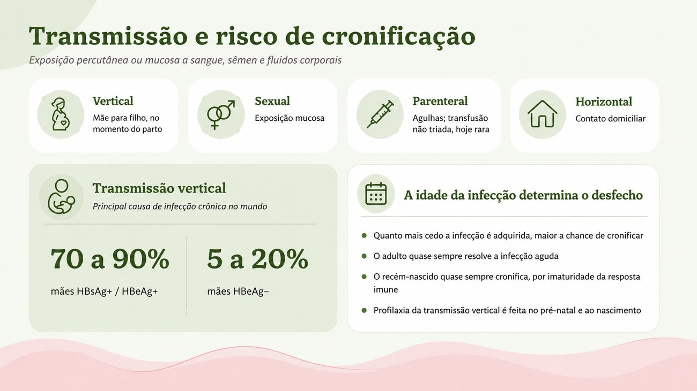
3 · Hepatite B: sorologia — a tabela que decide tudo
| Marcador | O que indica | Detalhe que cai |
|---|---|---|
| HBsAg | infecção presente (1º marcador: positiva 7–10 dias antes dos sintomas) | persistência >6 meses = CRONIFICAÇÃO |
| Anti-HBs | imunidade (infecção resolvida OU vacina) | isolado (sem anti-HBc) = VACINA |
| Anti-HBc IgM | infecção aguda (ou reativação) | o "carimbo" da fase aguda |
| Anti-HBc total (IgG) | contato prévio com o vírus completo — persiste indefinidamente | isolado NÃO confere imunidade |
| HBeAg | replicação intensa, alta infectividade | correlato histológico: núcleo areado |
| Anti-HBe | queda da replicação (soroconversão) | ausência de HBeAg NÃO exclui replicação: mutação pré-core |
| HBV-DNA | quantifica replicação — atividade e resposta ao tratamento | o desempate quando a sorologia confunde |
- HBcAg não circula no soro — o que se dosa é o anti-HBc; o antígeno do core só é reconhecido no tecido, no núcleo do hepatócito.
- As fases da infecção crônica são definidas pela relação entre replicação viral e resposta imune, não pela carga viral isolada.
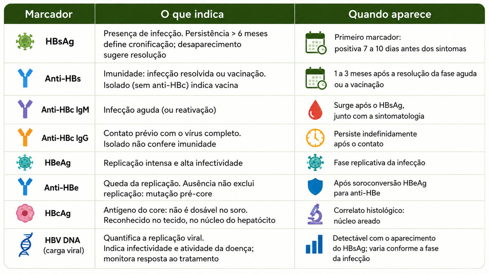
4 · Hepatite B: morfologia da aguda à crônica
Aguda
- Degeneração balonizante (tumefação com citoplasma claro e rarefeito — lesão reversível) convivendo com corpúsculos de Councilman (apoptose consumada, acidófilos e retraídos) — "estágios distintos da mesma agressão, na mesma lâmina".
- A extensão da necrose separa a hepatite comum da fulminante: focal → em ponte (porta–porta, porta–centro, centro–centro) → panacinar → maciça. Na maciça: ausência de hepatócitos, colapso da trama de reticulina, espaços-porta aproximados e proliferação ductular reacional (células progenitoras tentando regenerar). Clínica: insuficiência hepática aguda, encefalopatia, coagulopatia — <1% dos casos de HBV aguda, mas alta mortalidade.
- Macro da aguda: fígado discretamente aumentado, amolecido, avermelhado; da crônica/cirrose: retraído, endurecido, macronodular.
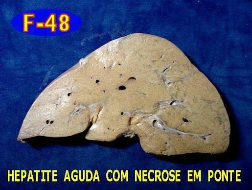
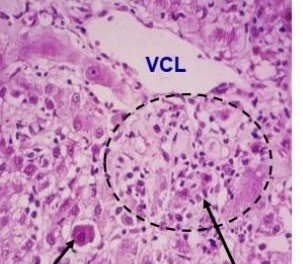
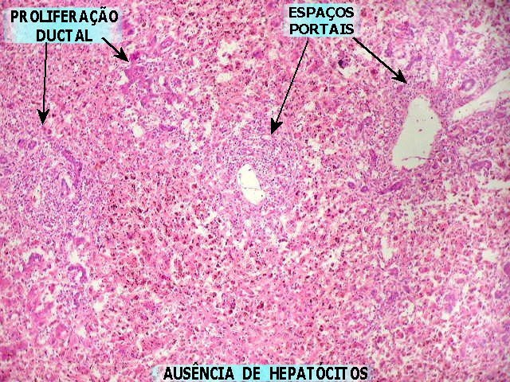
Crônica
- Chave dupla: inflamação que ULTRAPASSA A PLACA LIMITANTE (o infiltrado portal invade o parênquima periportal — hepatite de interface) + marcadores citopáticos do HBV: hepatócito em VIDRO FOSCO (citoplasma amplo, homogêneo, granular — corresponde ao HBsAg citoplasmático) e núcleo areado (HBcAg).
- Expansão fibrosa portal → septos → nódulos regenerativos cercados por fibrose: o caminho para a cirrose. Ciclos repetidos de lesão imune + regeneração acumulam erro → carcinoma hepatocelular (que no HBV também pode vir SEM cirrose, pela integração do DNA).
- Biópsia lauda em dois eixos independentes: grau (atividade necroinflamatória) e estágio (fibrose); a elastografia estima a rigidez/fibrose sem invadir.
5 · Hepatite C: quasispecies, cronicidade e a tríade histológica
- HCV (Flaviviridae, RNA fita simples +, envelopado): uma ORF única gera uma poliproteína clivada em estruturais (core, E1/E2) e não estruturais (NS3/4A protease, NS5A, NS5B RNA-polimerase). 8 genótipos.
- Por que cronifica? A NS5B tem baixa fidelidade e não corrige erros → nuvem de variantes (quasispecies) → escape imunológico → persistência. É também por isso que não há vacina e que existe resistência a antivirais.
- Números: ~30% eliminam espontaneamente em até 6 meses; ~70% cronificam; dos crônicos, 15–30% desenvolvem cirrose em até 20 anos (aceleram: álcool, HIV, HBV, obesidade/resistência insulínica). A lesão, de novo, é imunomediada (T CD8+, NK, Kupffer) — inflamação persistente ativa as células estreladas → colágeno → fibrose → cirrose → CHC.
🎯 A tríade histológica da hepatite C
Três achados juntos apontam HCV na lâmina: (1) AGREGADOS/FOLÍCULOS LINFOIDES nos espaços-porta, (2) ESTEATOSE hepatocitária (o vírus altera o metabolismo lipídico) e (3) HEPATITE DE INTERFACE (inflamação portal invadindo o parênquima periportal). Compare: plasmócitos + colestase = HAV · vidro fosco + núcleo areado = HBV · agregados linfoides + esteatose = HCV.
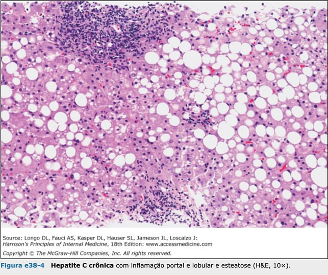
- METAVIR — dois eixos independentes: Atividade necroinflamatória A0–A3 e Fibrose F0–F4 (F4 = cirrose, com proliferação ductal). Colorações: HE (arquitetura) + tricrômico de Masson (colágeno/fibrose).
- Diagnóstico: anti-HCV (teste rápido/sorologia) = contato prévio, não diferencia curado de ativo → HCV-RNA (PCR) confirma infecção ATIVA e quantifica; genotipagem depois. Provas de necrose (AST/ALT) × provas de função (albumina, INR, bilirrubina); plaquetopenia sugere fibrose avançada/hipertensão portal; APRI/FIB-4 e elastografia estimam fibrose sem biópsia — a biópsia ficou para dúvida diagnóstica (e tem risco de sangramento no cirrótico).
6 · Cirrose: definição, classificações e os 3 eixos clínicos
- Definição: substituição do tecido hepático normal por tecido fibroso após estímulo inflamatório crônico, com perda progressiva da função. Alterações morfológicas fundamentais: (1) fibrose difusa com septos, (2) nódulos regenerativos, (3) desorganização da arquitetura — e (4) proliferação de ductos biliares, que diferencia cirrose de hepatite crônica.
- Classificação morfológica: MICROnodular (<3 mm — alcoólica) × MACROnodular (>3 mm — hepatites virais) × mista. Etiológica: viral, alcoólica, metabólica (MASH — a causa emergente que mais cresce), autoimune, colestática, genética, medicamentosa, criptogênica.
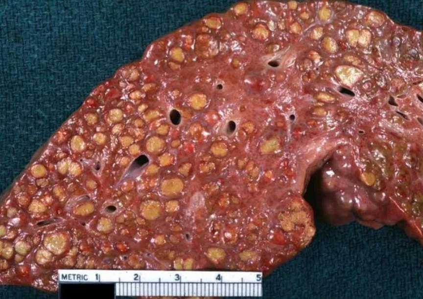
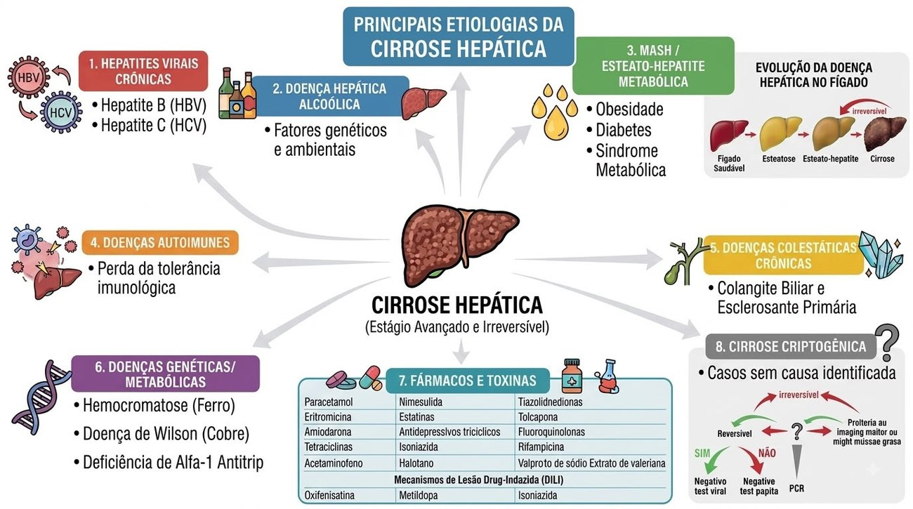
Como o cirrótico se apresenta — os 3 eixos
- 1Insuficiência hepática — ↓ albumina (edema/ascite), icterícia, coagulopatia, ↓ detoxificação → ↑ amônia → encefalopatia; alterações hormonais → spider angiomas, eritema palmar, ginecomastia.
- 2Hipertensão portal — ↑ resistência intra-hepática → colaterais portossistêmicas: varizes gastroesofágicas (risco de hemorragia), esplenomegalia/hiperesplenismo (plaquetopenia), ascite, caput medusae.
- 3Complicações da doença crônica — carcinoma hepatocelular, infecções, síndromes hepatorrenal e hepatopulmonar, sarcopenia.
🩺 O caso do grupo: A.C.M., 63 anos
Mecânico aposentado, aumento do volume abdominal há 8 meses, edema, perda de 7 kg, sonolência ocasional — e o antecedente-chave: transfusão em 1990, antes da triagem para HCV. Exame: icterícia, ascite, eritema palmar, telangiectasias, esplenomegalia. Labs: plaquetas 78 mil (hiperesplenismo), AST>ALT, albumina 3,0, INR 1,5. Anti-HCV reagente + HCV-RNA detectável (genótipo 1b), elastografia 15,2 kPa = F4. Biópsia: nódulos regenerativos + septos fibrosos + hepatite de interface + agregados linfoides. Diagnóstico: hepatite C crônica ativa evoluída para cirrose descompensada. É o roteiro clínico perfeito para memorizar a doença.
7 · Gastrite crônica por H. pylori
- Inflamação prolongada da mucosa gástrica. Etiologias: H. pylori em ~90%, autoimune, radiação, refluxo biliar. No Brasil, o H. pylori atinge 60–70% da população (mais no Norte/Nordeste), infecção adquirida na infância, via fecal-oral — e é fator predisponente, não doença: menos de 20% dos infectados desenvolvem doença gástrica grave.
- A bactéria fica na superfície da mucosa, SEM invadir as células: sobrevive ao ácido pela urease (ureia → amônia), adere e inflama por citocinas — cepas CagA/VacA+ inflamam mais e carregam mais risco de câncer.
Os fenótipos da gastrite por H. pylori (sequência-chave)
- 1Antrite (predomínio antral) — inflamação no antro → ↓ somatostatina → ↑ gastrina → HIPERcloridria → risco de úlcera DUODENAL.
- 2Pangastrite / atrofia do corpo — a inflamação sobe para o corpo, destrói células oxínticas → HIPO/acloridria + ↓ fator intrínseco.
- 3Atrofia avançada — perda de células G/D, ↓ gastrina-17, mucosa "intestinalizada" → terreno da cascata de Correa (câncer a longo prazo).
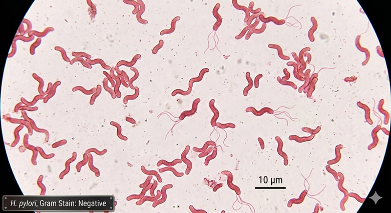
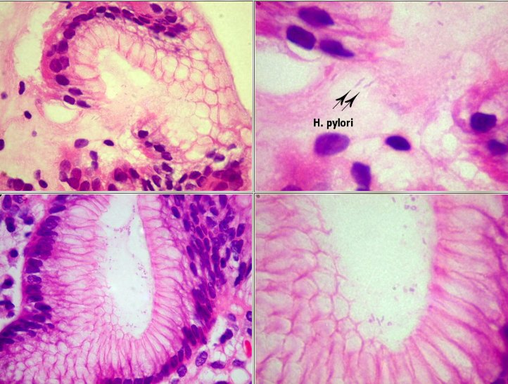
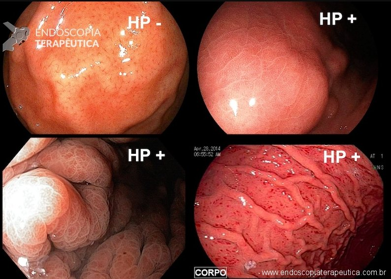
- Progressão histológica: gastrite superficial (infiltrado linfoplasmocitário sem atrofia) → gastrite atrófica (perda glandular) → METAPLASIA INTESTINAL (epitélio gástrico substituído por epitélio intestinal com caliciformes — adaptação com potencial displásico).
- Diagnóstico (V Consenso Brasileiro): teste rápido da urease; teste respiratório ¹³C-ureia = padrão-ouro NÃO invasivo (e para confirmar erradicação); histologia = padrão-ouro (mínimo 4 biópsias: 2 antro + 2 corpo — protocolo de Sydney completo: 5, incluindo incisura); antígeno fecal.
- Tratamento: erradicação — tríplice clássica (IBP + amoxicilina + claritromicina, limitada pela resistência) ou quádrupla com bismuto (destaque atual).
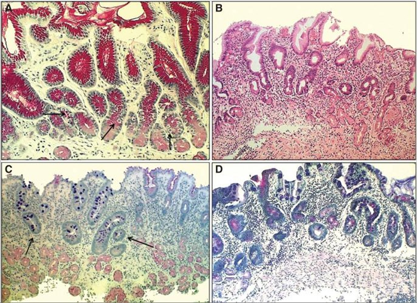
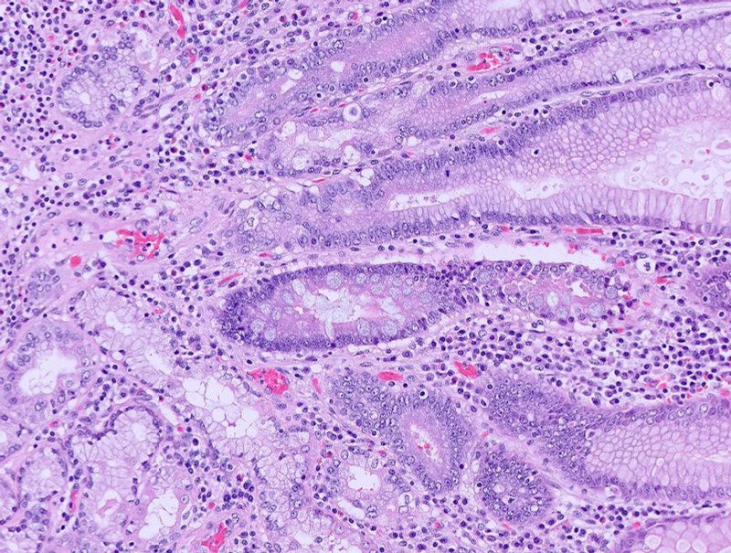
8 · Gastrite autoimune (e como separá-la da H. pylori)
- Autoimunidade contra as células PARIETAIS (corpo e fundo!) com autoanticorpos anti-célula parietal e anti-FATOR INTRÍNSECO — sem depender de H. pylori.
- A cadeia que explica tudo: destruição das parietais → hipo/acloridria → perde-se o freio da somatostatina → HIPERGASTRINEMIA crônica (as células G do antro seguem funcionantes) → efeito trófico sobre as células ECL → hiperplasia de ECL → risco de TUMOR NEUROENDÓCRINO. E a perda do fator intrínseco → ↓ B12 → ANEMIA PERNICIOSA (megaloblástica) + anemia ferropriva precoce (ácido baixo absorve mal o ferro).
- Clínica além da dispepsia: astenia, glossite atrófica, e as manifestações neurológicas da B12 (parestesias, perda de sensibilidade vibratória/proprioceptiva, ataxia — degeneração combinada subaguda).
- EDA: atrofia do CORPO com ANTRO PRESERVADO (o espelho da H. pylori clássica), vasos submucosos visíveis, pólipos hiperplásicos. Investigação: B12, ferro/ferritina, gastrina, pepsinogênio I/II, autoanticorpos. Tratamento: repor B12 (IM) e ferro.
⚠️ O comparativo que decide a prova
TOPOGRAFIA + tipo de infiltrado: gastrite por H. pylori começa no ANTRO e tem componente neutrofílico ("ativa"); gastrite autoimune pega CORPO/FUNDO poupando o antro e não tem o infiltrado neutrofílico da infecção. Perfil: HP = hipercloridria (fase antral) · autoimune = acloridria + hipergastrinemia + B12 baixa.
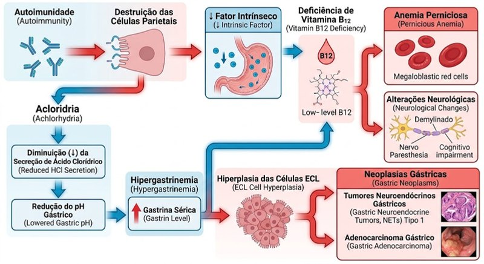
🩺 O caso do grupo: L.W., 63 anos
Queimação epigástrica há 6 meses com piora pós-prandial, dispepsia — e as pistas de alerta: astenia, palidez, glossite, parestesias nos pés, piora com ibuprofeno. Labs: anemia macrocítica (VCM 112 fL), B12 120 pg/mL, ferritina 9. EDA: mucosa pálida, pregas apagadas, vasos visíveis — atrofia restrita a corpo e fundo. Diagnóstico: gastrite crônica AUTOIMUNE. A 1ª impressão "gastrite por H. pylori" cai pela topografia + ausência de neutrófilos + síndrome da B12.
9 · Úlcera péptica e pólipos gástricos
- A balança da mucosa: proteção = muco + bicarbonato + fluxo sanguíneo + prostaglandinas (via COX-1) + renovação epitelial · agressão = ácido/pepsina, H. pylori, AINEs (inibem COX-1 → ↓ prostaglandinas → ↓ muco/bicarbonato/fluxo), álcool, tabaco, estresse (hipoperfusão). Úlcera = agressores vencendo as defesas.
- Macro da úlcera péptica benigna: lesão escavada, bem delimitada, redonda/oval, fundo com fibrina, bordas regulares e edemaciadas, pregas convergindo simetricamente. Micro: perda de continuidade da mucosa com exsudato fibrinoso e tecido de reparação em camadas ordenadas.
- Úlcera benigna × neoplásica: a maligna tem bordo evertido, nodular e irregular, fundo friável/necrótico que sangra ao toque, pregas amputadas/fusionadas antes da lesão, arquitetura destruída na histologia. Classificações: Sakita-Miwa (A1/A2 ativa → H1/H2 cicatrização → S1/S2 cicatriz) e BOR (base, orla, relevo).
- Lab do sangramento: ↓ Hb/Ht + ↑ ureia/BUN (digestão do sangue no tubo alto + hipovolemia — BUN ≥21 sugere gravidade). Tratamento: erradicar H. pylori, suspender AINE, IBP; complicada → endoscopia/cirurgia.
- Pólipos gástricos: hiperplasia foveolar em resposta à inflamação crônica (H. pylori) ou à hipergastrinemia trófica (autoimune → ECL). Micro do hiperplásico: arquitetura serrilhada, discreta atipia basal, infiltrado, congestão. Evolução benigna, mas com risco de displasia — e erradicar o H. pylori faz o pólipo regredir em até ~70% dos casos.
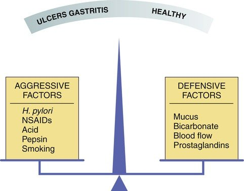
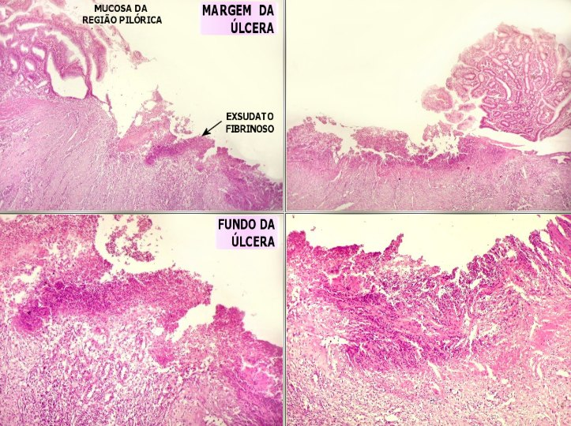
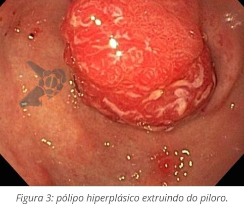
10 · GIST: o tumor das células de Cajal
- Tumor mesenquimal mais comum do TGI (ainda que raro: 0,1–3% das neoplasias GI), originado das células intersticiais de CAJAL — o "marca-passo" que gera as ondas lentas e coordena o peristaltismo. Estômago = 60–70% dos casos; pico aos 50–70 anos. Cresce intramural (na muscular própria), como massa subepitelial com mucosa íntegra por cima.
- Drivers mutuamente exclusivos: KIT mutado (~75–80%, éxon 11) — o receptor tirosina-quinase "destrava", dimeriza e se autofosforila SEM ligante → vias RAS/MAPK (proliferação) e PI3K/AKT (sobrevivência) permanentemente ligadas — ou PDGFRA (~5–10%, éxon 18). Wild-type (~10–15%): deficiência de SDH → succinato acumula → estabiliza HIF-1α → pseudo-hipóxia.
- IHQ: CD117 (KIT) ~95% + DOG1 (cobre os CD117-negativos) + CD34 (~70%, menos específico). Padrões: fusocelular 70% · epitelioide 20% · misto 10%. Diferenciais (leiomioma, schwannoma, leiomiossarcoma) caem pela IHQ.
- Atenção: CD117 positivo ≠ mutação no KIT — a IHQ mostra a proteína; o genótipo (gene/éxon) vem do sequenciamento, e é ele que orienta dose e resposta ao IMATINIBE (inibidor de tirosina-quinase que bloqueia o sítio do ATP; éxon 11 responde bem, éxon 9/D842V respondem mal).
- Prognóstico = tamanho + índice mitótico (mitoses/5 mm²) + localização (estômago melhor que delgado) ± ruptura. Risco NIH: baixo = cirurgia + seguimento · alto = cirurgia + imatinibe adjuvante 400 mg/dia por 3 anos.
- Investigação: EDA (abaulamento subepitelial) → ecoendoscopia (lesão hipoecoica da muscular própria) → EUS-FNB: um fragmento dá histologia + IHQ + molecular.
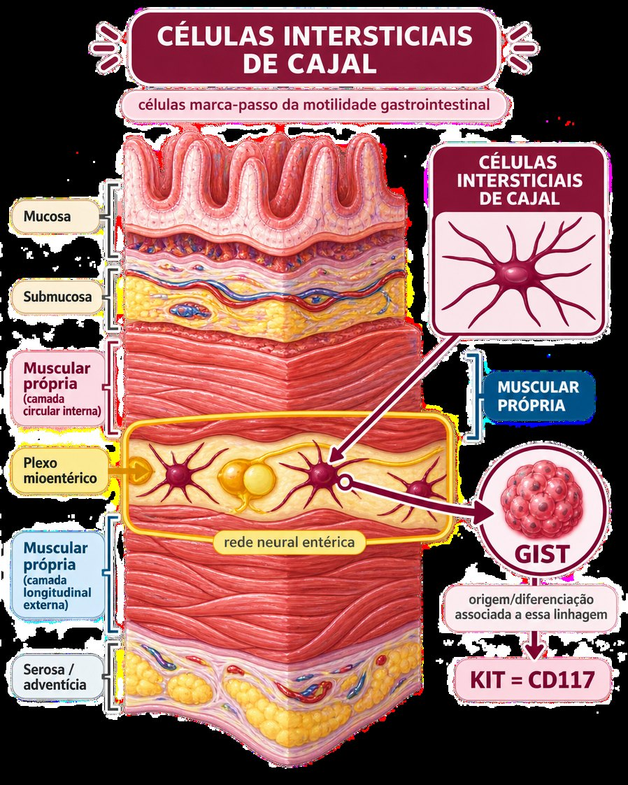
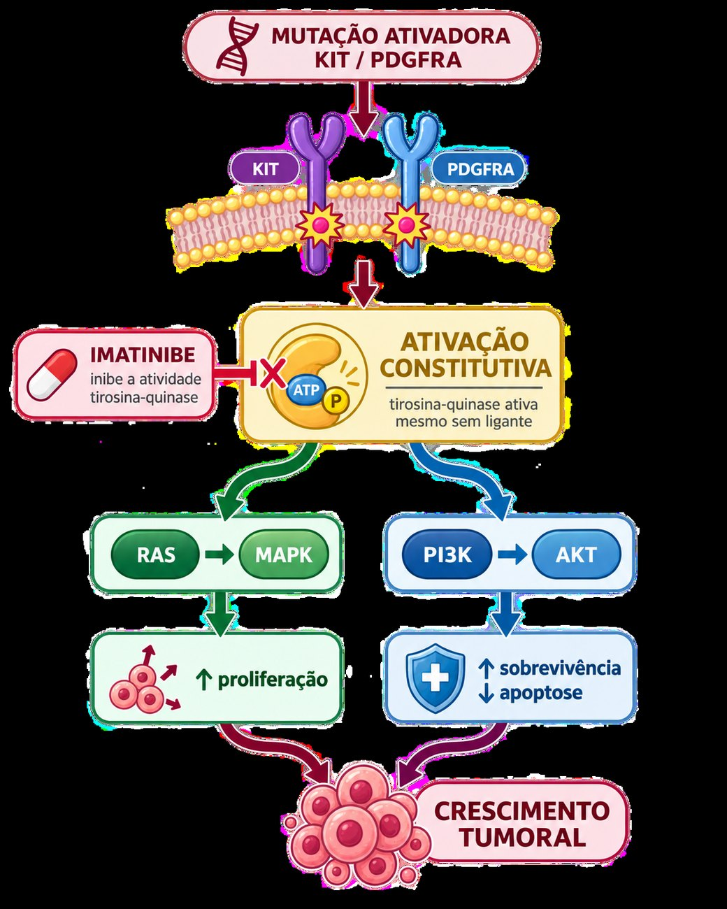
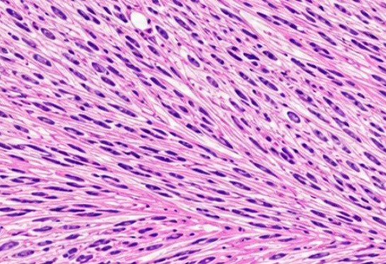
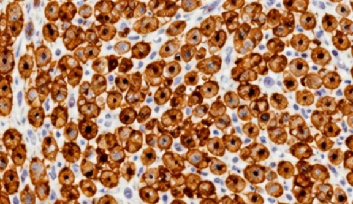
11 · Adenocarcinoma gástrico: de Correa a Borrmann
- Neoplasia maligna EPITELIAL (glandular) — principal câncer do estômago, 5º câncer em incidência e mortalidade no mundo; Brasil ~22,5 mil casos/ano, mais em homens. Etiologia multifatorial: H. pylori (principal), dieta salgada/defumada, tabagismo, gastrite atrófica/metaplasia/anemia perniciosa, e CDH1 no hereditário difuso.
Cascata de Correa (cada etapa = janela de intervenção)
- 1Mucosa normal → gastrite crônica — infiltrado linfoplasmocitário pelo H. pylori (cepas CagA/VacA+ aceleram tudo).
- 2Gastrite atrófica — perda progressiva das glândulas especializadas.
- 3Metaplasia intestinal — caliciformes no estômago.
- 4Displasia — atipia arquitetural + citológica.
- 5Adenocarcinoma — lesão invasiva estabelecida. Por isso erradicar H. pylori cedo importa.
- Lauren: tipo INTESTINAL — glândulas bem formadas, vem da cascata de Correa/metaplasia, idosos/homens, melhor prognóstico · tipo DIFUSO — células pouco coesas por perda de E-caderina (CDH1), células em ANEL DE SINETE (mucina empurrando o núcleo), pacientes mais jovens, linite plástica ("garrafa de couro" — desmoplasia difusa da parede), pior prognóstico.
- Borrmann (câncer avançado): I polipoide · II ulcerado de bordas elevadas e nítidas · III ulcerado-infiltrativo (o mais comum no diagnóstico) · IV infiltrativo difuso/linite. I–III ≈ intestinal; IV ≈ difuso. Lesões precoces usam a classificação de Paris (0-I/II/III).
- TNM essencial: T1 mucosa/submucosa (= câncer gástrico PRECOCE) → T2 muscular própria → T3 subserosa → T4a serosa/T4b órgãos vizinhos; N pelo nº de linfonodos (N1 1–2 → N3b ≥16); M1 = estágio IV. Sobrevida em 5 anos: precoce >90% · estágio III 20–35% · IV <10% — o estágio muda tudo, e >50% chegam avançados.
- Sinais de doença avançada (os epônimos): linfonodo de Virchow (supraclavicular E), nódulo da Irmã Maria José (umbigo), prateleira de Blumer (toque retal), tumor de Krukenberg (ovários bilaterais — típico do difuso/anel de sinete).
- Biomarcadores: HER2 superexpresso em 15–20% (mais no intestinal) → TRASTUZUMABE + quimio; Ki-67 (proliferação), E-caderina (difuso); séricos CEA/CA19-9/CA72-4 acompanham, não diagnosticam. Diagnóstico/estadiamento: EDA + biópsia → ecoendoscopia (T/N) → TC (M) → laparoscopia se dúvida peritoneal.
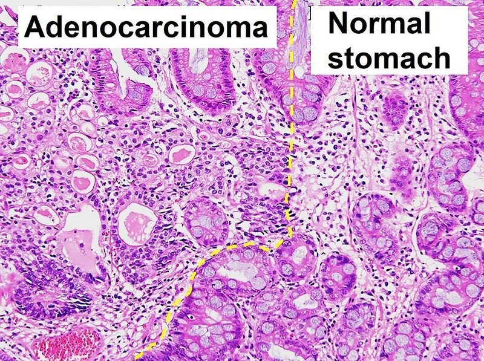
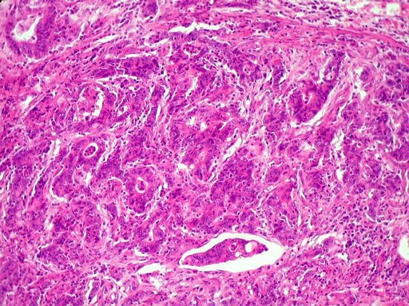
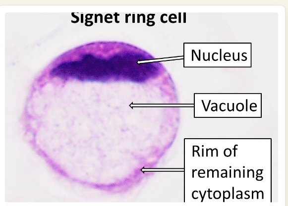
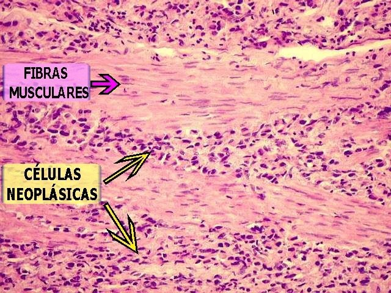
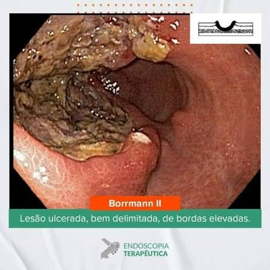
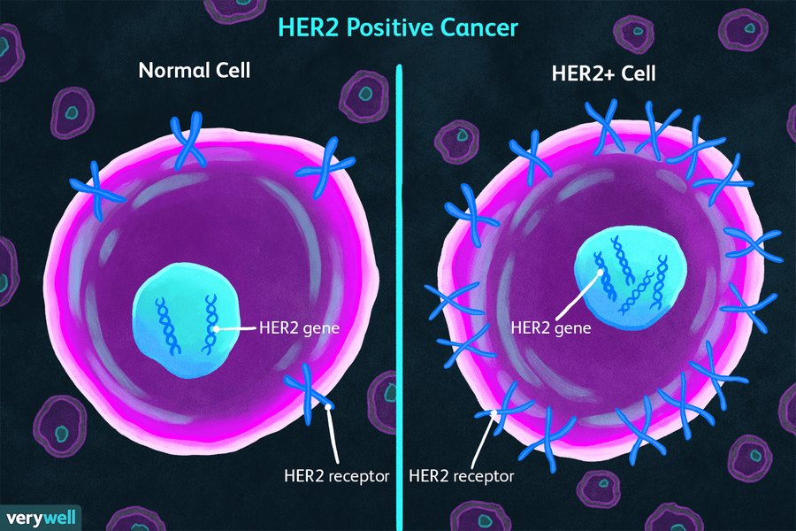
🩺 O caso do grupo: M.J.S., 67 anos
Dor epigástrica há 4 meses + anorexia, saciedade precoce, perda de 10 kg e melena. EDA: lesão ulcerada e infiltrativa no antro, bordas irregulares — Borrmann III. Biópsia: adenocarcinoma tipo intestinal moderadamente diferenciado (a ponta final da cascata de Correa). Estadiamento por TC: T3N1M0 → gastrectomia subtotal + linfadenectomia + quimioterapia perioperatória, com painel HER2. E o contraponto didático do grupo: se a biópsia mostrasse GIST, tudo mudaria — CD117/DOG1, sequenciamento KIT/PDGFRA e imatinibe.
✅ Resumo rápido do simpósio
- Regra de ouro das hepatites virais: a lesão é IMUNOMEDIADA (T CD8+), não citopática. Assinaturas: HAV = plasmócitos + colestase canalicular, sem cronificar · HBV = vidro fosco (HBsAg) + núcleo areado (HBcAg), DNA integra → CHC sem cirrose, cccDNA = reservatório · HCV = agregados linfoides + esteatose + interface, NS5B → quasispecies → 70% cronificam.
- Sorologia HBV: HBsAg >6m = crônica · anti-HBs isolado = vacina · anti-HBc IgM = aguda · HBeAg = replicação (pré-core: replica sem HBeAg) · HBV-DNA quantifica. Vertical cronifica 70–90% × adulto 5–20%.
- Cirrose: fibrose difusa + nódulos regenerativos + desorganização + proliferação ductal (≠ hepatite crônica) · micro=álcool, macro=viral · 3 eixos: insuficiência, hipertensão portal, complicações (CHC) · METAVIR F4 · MASH em ascensão.
- Gastrite: H. pylori = ANTRO + neutrófilos, urease, antrite→hipercloridria→úlcera duodenal; pangastrite→atrofia→metaplasia (Correa) · Autoimune = CORPO/FUNDO, anti-parietal/anti-FI, acloridria + hipergastrinemia → ECL → tumor neuroendócrino, B12/perniciosa. ¹³C-UBT = padrão-ouro não invasivo; histologia (Sydney) fecha.
- Úlcera: agressores × defensores (COX-1/prostaglandinas; AINEs) · benigna: escavada, bordas regulares, pregas convergentes · maligna: bordo evertido, fundo friável, pregas amputadas · BUN sobe no sangramento alto · pólipo hiperplásico regride ~70% com erradicação.
- GIST: mesenquimal (Cajal), subepitelial, KIT éxon 11/PDGFRA (exclusivos), CD117+DOG1, fusocelular 70%, prognóstico = tamanho+mitoses+local, imatinibe (genótipo manda) · Adenocarcinoma: epitelial, Correa, Lauren intestinal×difuso (CDH1/anel de sinete/linite), Borrmann I–IV, TNM (T1=precoce >90% em 5 anos), epônimos (Virchow, Irmã Maria José, Blumer, Krukenberg), HER2→trastuzumabe.
🧫 Resumão Pré-Prova — Simpósio
Revisão da véspera · Anato Pato II · Hepatites A/B/C, Cirrose, Gastrites, Úlcera, GIST e Adenocarcinoma
| HAV | HBV | HCV | |
|---|---|---|---|
| Genoma | RNA | DNA parcialmente dupla-fita (transcriptase reversa!) | RNA fita simples + (Flaviviridae) |
| Cronifica? | NUNCA | vertical 70–90% · adulto 5–20% | ~70% (30% clareiam em 6m) |
| Assinatura na lâmina | plasmócitos portais + colestase canalicular proeminente | vidro fosco (HBsAg) + núcleo areado (HBcAg) | agregados linfoides + esteatose + interface |
| Carcinogênese | — | integração do DNA → CHC SEM cirrose | via cirrose (15–30% em 20 anos) |
| Detalhe-chave | lesão 100% imunomediada; anti-HAV IgG imuniza | cccDNA nuclear = reservatório/reativação | NS5B sem revisão → quasispecies → sem vacina |
- Comum às três: lesão IMUNOMEDIADA (T CD8+), balonização (reversível) + corpúsculo de Councilman (apoptose) na aguda.
- Gravidade da aguda = extensão da necrose: focal → em ponte → panacinar → maciça (colapso de reticulina + proliferação ductular = fulminante, <1% no HBV).
- HBsAg = infecção presente · >6 meses = crônica · 1º marcador (7–10d antes dos sintomas).
- Anti-HBs = imunidade · isolado (sem anti-HBc) = VACINA.
- Anti-HBc IgM = aguda/reativação · IgG = contato prévio, persiste sempre (isolado NÃO protege).
- HBeAg = replicação intensa/infectividade (histologia: núcleo areado) · anti-HBe = soroconversão · sem HBeAg pode replicar = mutação pré-core → confere HBV-DNA.
- HBcAg não circula no soro — só no núcleo do hepatócito.
- HCV: anti-HCV = contato prévio · HCV-RNA = infecção ATIVA (confirma e quantifica) → genotipagem depois.
- 4 marcas morfológicas: fibrose difusa/septos + nódulos regenerativos + desorganização da arquitetura + PROLIFERAÇÃO DUCTAL (esta diferencia de hepatite crônica).
- MICROnodular (<3mm) = álcool · MACROnodular (>3mm) = viral · mista. MASH = etiologia emergente nº 1.
- 3 eixos clínicos: insuficiência (albumina↓/icterícia/coagulopatia/amônia→encefalopatia; spiders, eritema palmar) · hipertensão portal (varizes→HDA, esplenomegalia→plaquetopenia, ascite, caput medusae) · complicações (CHC, hepatorrenal).
- METAVIR: A0–A3 (atividade) ⊥ F0–F4 (F4 = cirrose). Elastografia estima fibrose sem biópsia; biópsia só se dúvida (risco de sangrar no cirrótico).
- AST>ALT + plaquetopenia + albumina↓ + INR↑ = perfil do cirrótico descompensado.
| H. pylori (~90%) | Autoimune | |
|---|---|---|
| Topografia | ANTRO (depois pangastrite) | CORPO/FUNDO, antro POUPADO |
| Infiltrado | mononuclear + NEUTRÓFILOS ("ativa") | mononuclear, sem componente neutrofílico |
| Ácido | fase antral: HIPERcloridria → úlcera duodenal | acloridria + HIPERgastrinemia |
| Marcadores | urease + · ¹³C-UBT · histologia | anti-célula parietal + anti-fator intrínseco |
| Consequências | atrofia → metaplasia intestinal → Correa | B12↓/anemia PERNICIOSA + ECL → tumor neuroendócrino |
- H. pylori: superfície da mucosa, não invade; urease (ureia→amônia); cepas CagA/VacA+ = mais dano/câncer; fecal-oral; 60–70% dos brasileiros.
- Sequência autoimune: ↓parietais → ↓HCl → ↑gastrina → ↑ECL → tumor neuroendócrino. E B12↓ → glossite, parestesias, degeneração combinada.
- Diagnóstico HP: ¹³C-UBT = padrão-ouro NÃO invasivo (e controle de cura) · histologia = padrão-ouro (Sydney: 2 antro + 2 corpo + 1 incisura) · tratamento: tríplice (IBP+amoxi+claritro) ou quádrupla c/ bismuto.
- Balança: defesas (muco, bicarbonato, fluxo, prostaglandinas/COX-1) × agressores (ácido, H. pylori, AINEs, tabaco, estresse/isquemia).
- Benigna: escavada, bordas regulares, fundo de fibrina, pregas convergentes ≠ maligna: bordo evertido/nodular, fundo friável, pregas amputadas.
- Sakita-Miwa: A (ativa) → H (cicatrização) → S (cicatriz). Sangramento alto: ↑BUN/ureia (≥21 = gravidade) + Hb↓.
- Pólipo hiperplásico gástrico: hiperplasia foveolar; serrilhado, atipia leve basal; erradicação do HP regride ~70%.
| GIST | Adenocarcinoma | |
|---|---|---|
| Origem | mesenquimal — células de CAJAL (muscular própria) | epitelial — glândulas da mucosa |
| Driver | KIT éxon 11 (75–80%) ou PDGFRA (exclusivos); wild-type = SDH | H. pylori/Correa; CDH1 no difuso hereditário |
| Marcadores | CD117 + DOG1 (+CD34) | HER2 (15–20%), Ki-67, E-caderina |
| Macro | subepitelial, mucosa íntegra | Borrmann I–IV (III = mais comum; IV = linite) |
| Terapia-alvo | IMATINIBE (genótipo manda a dose) | TRASTUZUMABE se HER2+ |
| Disseminação | hematogênica (fígado, peritônio) | linfática + hematogênica + peritoneal |
- GIST prognóstico: tamanho + mitoses/5mm² + localização (estômago melhor) ± ruptura → risco NIH → alto risco = imatinibe adjuvante 3 anos. CD117+ ≠ KIT mutado (IHQ=proteína; sequenciamento=genótipo).
- Cascata de Correa: normal → gastrite crônica → atrofia → metaplasia intestinal → displasia → adenocarcinoma (CagA/VacA aceleram).
- Lauren: intestinal (glândulas, Correa, idosos, melhor) × difuso (anel de sinete, perda de E-caderina, jovens, linite plástica, Krukenberg).
- TNM: T1 (mucosa/submucosa) = precoce → >90% em 5 anos · III 20–35% · IV <10%. Epônimos avançados: Virchow (supraclavicular E) · Irmã Maria José (umbigo) · Blumer (toque retal) · Krukenberg (ovários).
- Anti-HBs isolado = vacinado ≠ anti-HBs + anti-HBc IgG = infecção resolvida.
- Vidro fosco (HBsAg citoplasmático, HBV) ≠ esteatose (vacúolos de gordura, HCV/metabólica).
- Balonização = lesão reversível ≠ Councilman = apoptose consumada (convivem na mesma lâmina).
- Hepatite crônica ≠ cirrose: a cirrose tem nódulos + proliferação ductal.
- Micronodular = álcool ≠ macronodular = viral.
- Gastrite HP = antro + neutrófilos + hipercloridria ≠ autoimune = corpo + acloridria + hipergastrinemia + B12↓.
- Úlcera benigna = bordas regulares, pregas convergem ≠ Borrmann II/III = bordo evertido, pregas amputadas.
- GIST = mesenquimal/subepitelial/CD117 ≠ adenocarcinoma = epitelial/mucoso/HER2.
- CD117 positivo (proteína na IHQ) ≠ KIT mutado (genótipo no sequenciamento — quem guia o imatinibe).
- Anti-HCV+ = contato ≠ HCV-RNA+ = doença ativa.
Banco de Questões — Simpósio
Anato Pato II · Simpósio · estilo ENADE/residência.